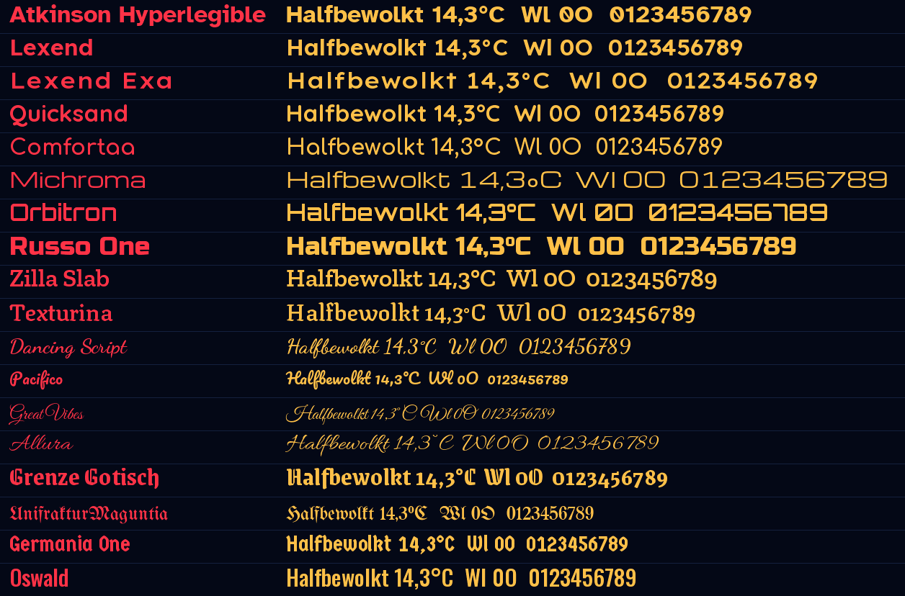
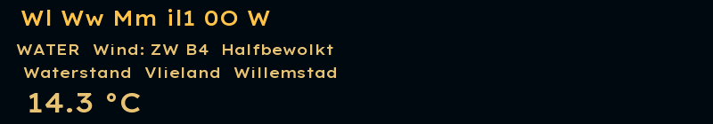
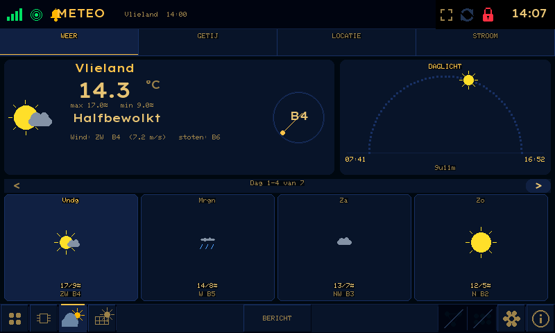
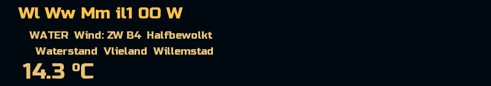
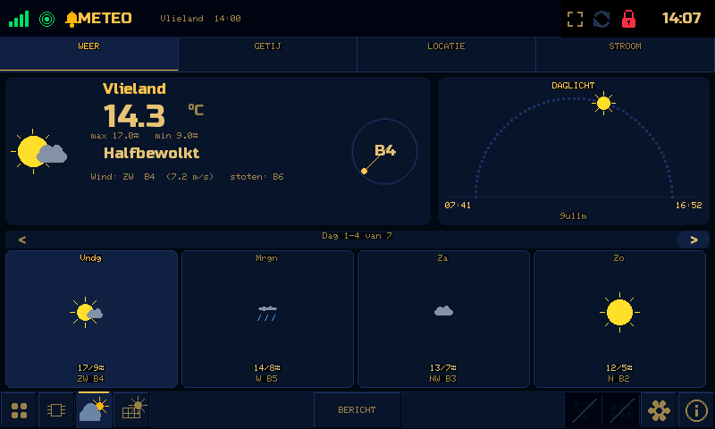
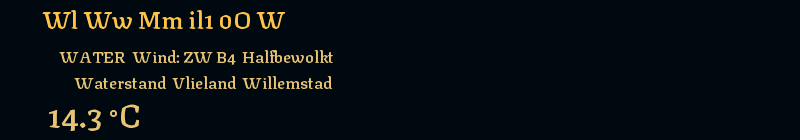
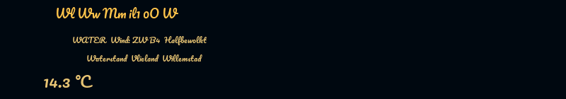
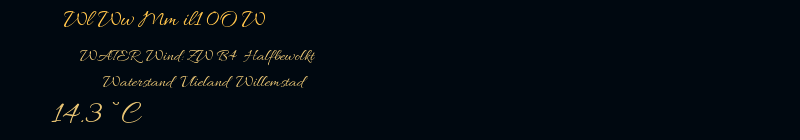
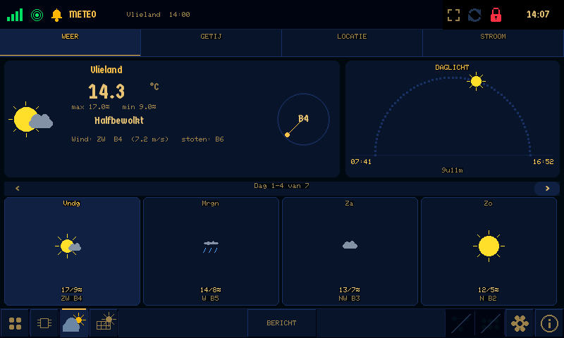

Voorstel · ronde 5 · jouw selectie
Lettertype voor boordcomputer en webapp
De 18 lettertypen die je mooi vindt. Links de naam, rechts dezelfde tekst, netjes onder elkaar uitgelijnd. Alles is gemaakt met de letterdata die op de boordcomputer en in de webapp komt.
Overzicht

Goed leesbaar
Atkinson Hyperlegible
Gemaakt voor slechtziende lezers; nul met streep, l met staartje.


Lexend
Breed en ontworpen voor leesgemak.


Lexend Exa
Lexend in een bredere, ruimere uitvoering.


Rond
Quicksand
Rond en strak.
Comfortaa
Rond en zacht, met dunne lijnen.


Strak en technisch
Michroma
Het dichtst bij Eurostile Extended (slank).


Orbitron
Hoekig en futuristisch.


Russo One
Vet en vierkant, in de geest van de vette Eurostile.


Klassiek
Zilla Slab
Blokschreef: klassiek maar stevig.


Texturina
Gotisch geïnspireerd, maar goed te lezen.

Sierlijk
Dancing Script
Vrolijk, vloeiend handschrift.


Pacifico
Vet, speels handschrift.

Great Vibes
Zeer sierlijk en fijn.


Allura
Elegant en wat opener.

Gotisch
Grenze Gotisch
Moderne, vette gotische letter.


UnifrakturMaguntia
Echte fraktur.


Germania One
Smalle, stevige gotische letter.

Smal
Oswald
Smal en hoog, zoals een krantenkop.